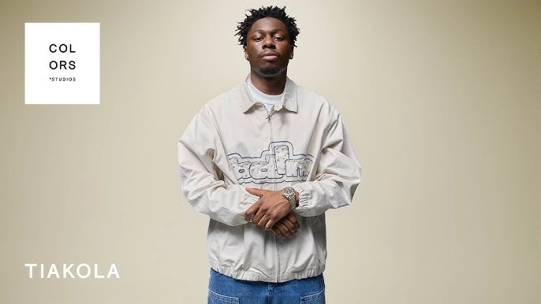

BIOGRAPHIE
Tiakola, de son vrai nom William Mundala, est un rappeur et chanteur français né le 4 décembre 1999 à Bondy, en Seine-Saint-Denis. Il est d’origine congolaise et ancien membre du groupe 4Keus. Tiakola grandit dans la cité des 4000 à La Courneuve, au sein d’une fratrie de huit enfants.Il rêve d’abord d’une carrière de footballeur et joue au club du Bourget dès l’âge de 5 ans . Mais son rêve n'a aboutit à rien et c'est lancé dans le monde de la musique IL débute sa carrière dans un groupe intitulé 4Keus GANG composé de 7 membres dont Tiakola y compris , suite à certais conflit le groupe se séparu en deux en 2017 ,d'ou la naissance du groupe 4keus composé de 4 membres dont figure Tiakola. Mais comme dans la plupart des groupes , vaint le moment de séparation et Tiakola lança sa carrière en solo en 2021 avec notamment la sorti de son premier single en solo intitulé "Sombre Mélodie"
Suite à ça il à sortie son premier Album en solo intitulé "Mélo" salué par la critique et le public avec notamment des titres phares comme: "Meuda" et "Gasolina" . de la s'en suit de nombreux prix et trophés . En 2022 , il collabore avec plusieurs artistes comme GAZO , Niska , Aya Nakamura et bien d'autres . Et en 2024 , il sort ça mixtape intitulé "BDLM vol1". Tiakola ne cesse de satisfaire ses fans et prévoit de sortir un second album en 2026.
Evénements prévus pour 2025
<
BDLM tour : Avril à Décembre 2025
Mélo world tour : Novembre à Décembre 2025
A propos de la chaîne
Cette chaîne a été créer par "Junior EBATA" en 2025
abonnez-vous à nos réseaux pour ne rien manquer sur les dernières actualités
A très bientôt !